寻找CDN后面的IP地址
原创声明：转载本文请标注出处和作者，望尊重作者劳动成果！感谢！
前言：CDN是 content distribution network（内容分发网络）的缩写，是指一种通过互联网互相连接的电脑网络系统，利用最靠近每位用户的服务器，更快、更可靠地将音乐、图片、视频、应用程序及其他文件发送给用户，来提供高性能、可扩展性及低成本的网络内容传递给用户。
识别 CDN
多地PING域名
https://ping.aizhan.com/
https://ping.chinaz.com/
https://myssl.com/cdn_check.html
如果多地服务器ping的结果是同一个，说明可能没有使用CDN。
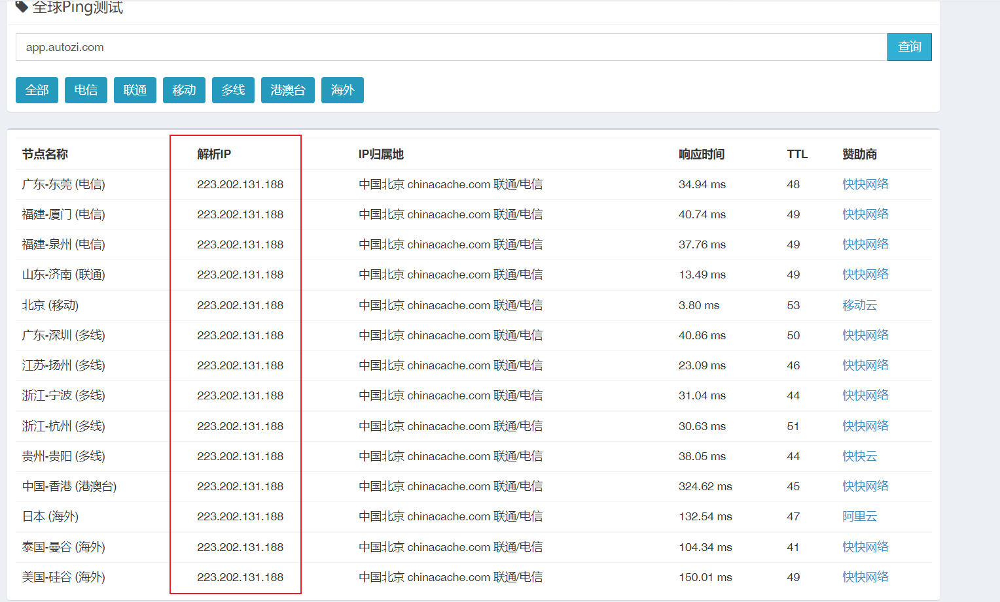
如果结果解析到多个IP，那么说明目标使用了CDN。
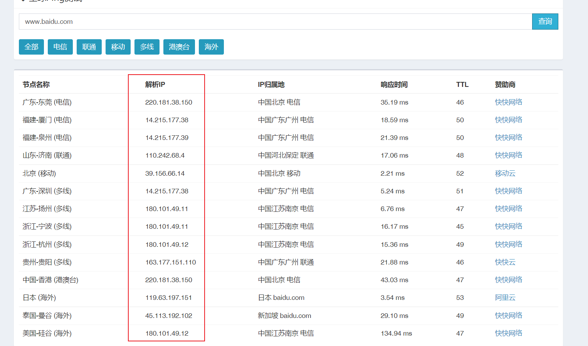
DNS解析
直接使用nslookup www.example.com，如果解析结果超过一条说明可能使用了CDN。
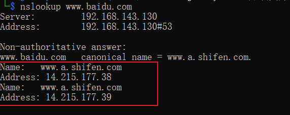
如果没有使用CDN那只有一条结果：
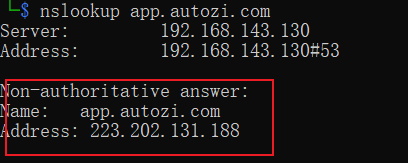
寻找真实IP的方法
PING 域名
ping www.example.com 与 ping example.com 的结果可能是不一样的，很多CDN厂商只把www.example.com放到CND主服务器上，因此ping example.com的结果可能是真实IP。
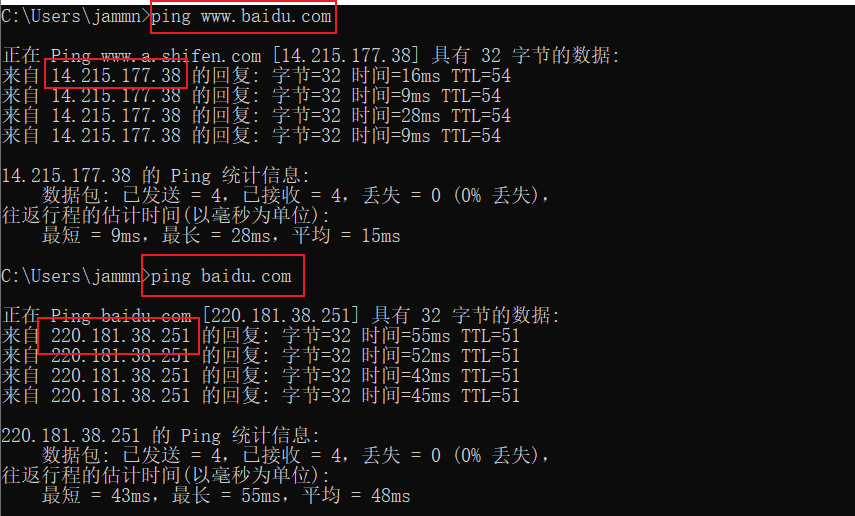
CDN可能不会作用于国外的节点，因此利用国外的节点进行ping可能会发现真实IP。
https://viewdns.info/ping/?domain=www.baidu.com
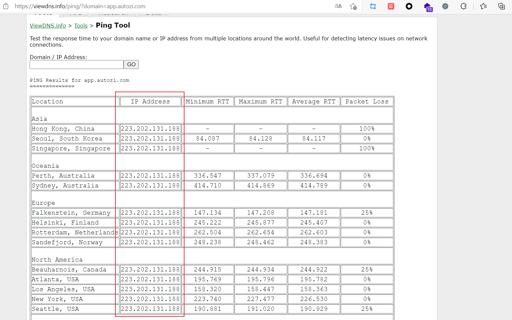
国外DNS在线解析
国内的CDN厂商大部分针对的是国内的，因此使用国外的DNS有可能解析出真实IP。
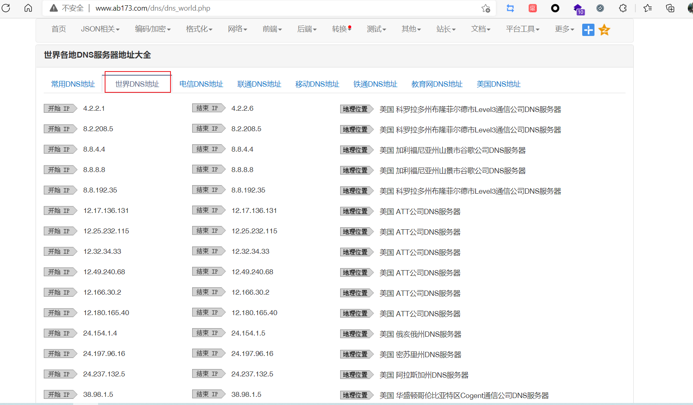
可以利用nslookup来自定义选择冷门的DNS解析：nslookup www.example.com 4.2.2.1
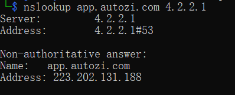
查看DNS解析历史记录
如果目标以前未使用过CDN，通过查看 IP 与 域名绑定的历史记录，可能会发现目标的真实IP。
https://viewdns.info/iphistory/
https://dnsdb.io/zh-cn/
https://x.threatbook.cn/
https://sitereport.netcraft.com/
https://securitytrails.com/domain/www.example.com/dns
子域名解析IP+C段扫描
CDN挺贵的，有的企业为了降低使用成本，可能主要或者常用网站才使用CDN。因此可以通过收集子域名并解析其IP地址的方法，发现目标的真实IP所在的C段，然后进一步锁定目标IP。子域名扫描的工具有很多，比如说你可以使用 jws-cli (https://github.com/jammny/jws-cli) 来帮助收集子域信息。当找到子域名的真实IP后，需要扫描它的C段以便于发现主站的真实IP，你依然可以选择使用 jws-cli ，因为他也可以帮忙进行C段信息的收集。当然如果你想更加直观的查看，也可以使用“小米范web查找器”。
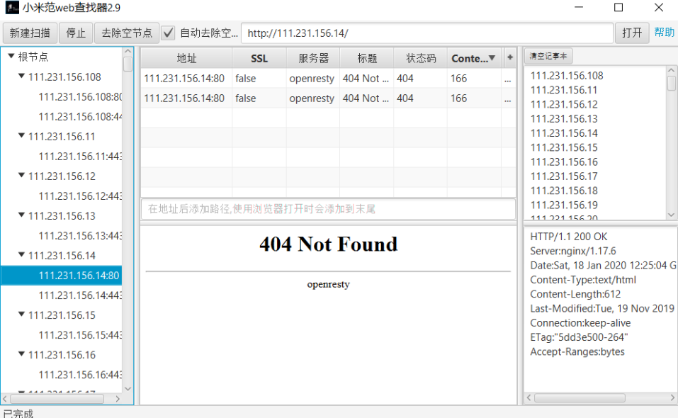
空间搜索引擎找特征
假设域名“www.jammny.com ”有一个明显特征，比如说标题为：“jammny的博客”。那么可以通过语法：body:"jammny的博客" 快速查找到目标域名对应的IP地址。这个地址有可能就是它真实的IP地址。这种特征除了网页前端源代码之外，还可以通过计算目标网站独有的ico图标的哈希值，通过语法icon_hash="-247388890找到对应的资产。当然你可以观察目标的header头部有没有什么特征，比如说：cloudflare，配合其他参数筛选目标。
https://fofa.info/
https://hunter.qianxin.com/
https://www.zoomeye.org/
目标网站邮件功能
寻找目标网站可以发送邮件的功能，比如说用户注册、忘记密码等，利用目标服务器主动发送邮件到你的邮箱，查看邮件中解析的目标IP地址。这个地址就可能是目标网站的真实IP。
目标存在网站漏洞
如果目标存在信息泄露，比如说 “phpinfo.php ”或者服务器探针文件，会泄露目标网站的真实IP。或者目标存在SSRF漏洞，通过服务器主动对外发起请求，利用DNSLOG可以获取到目标的真实IP。
非WEB的资产
如果目标存在APP、小程序、公众号、生活号，可以抓包看其是否存在真实的IP地址。
利用SSL证书寻找真实原始IP
可以通过Censys检索证书信息：https://censys.io/ ，语法：parsed.names: example.com and tags.raw: trusted
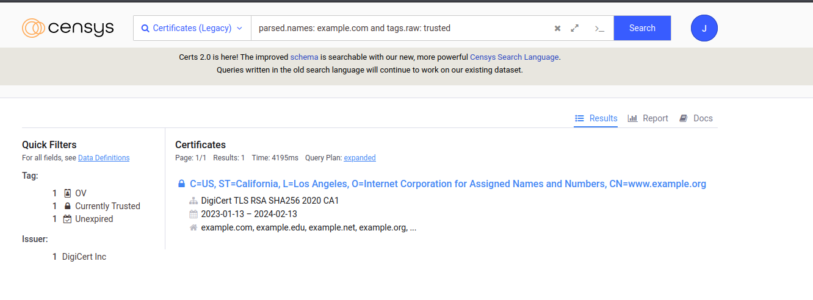
检索使用这张证书的地址：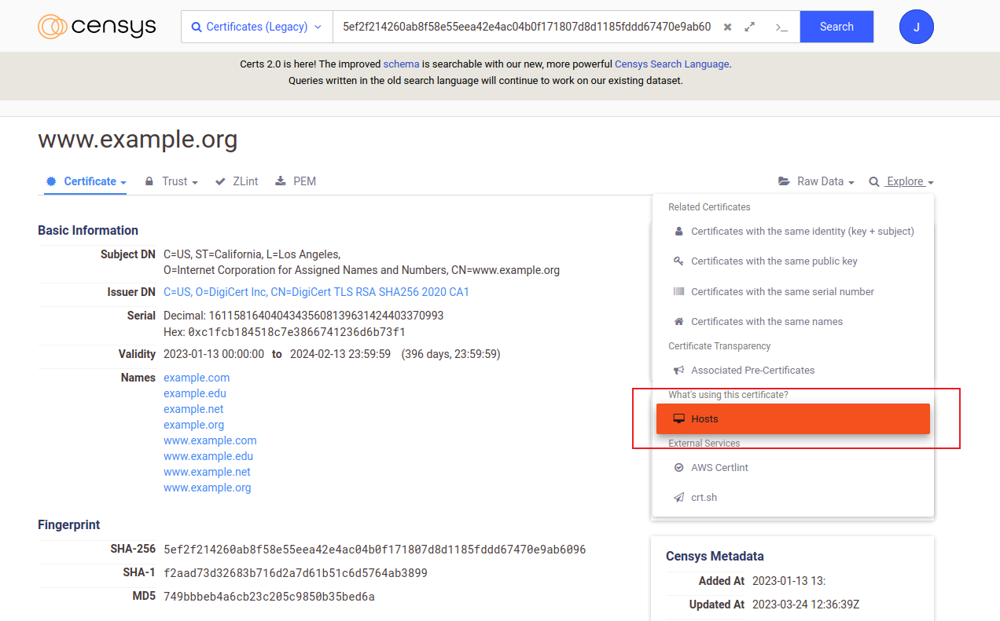
下面IP的其中可能就有真实IP：
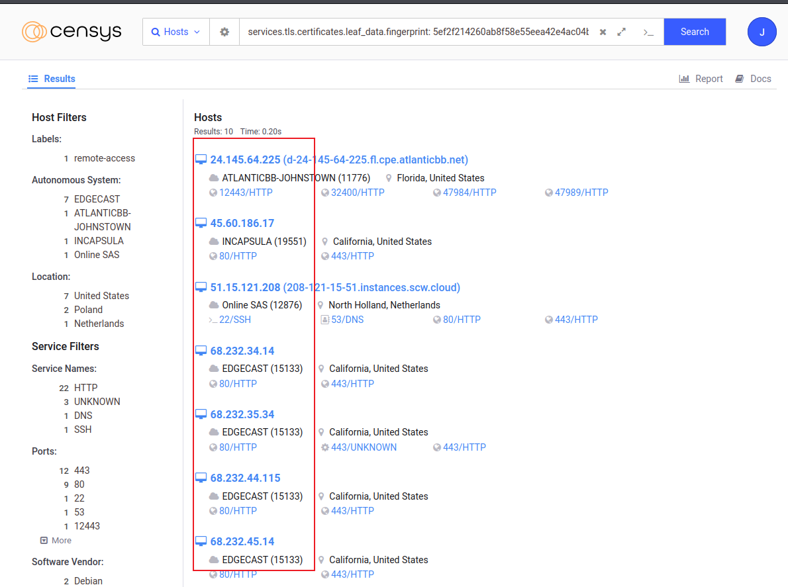
F5 LTM解码法
当服务器使用F5 LTM做负载均衡时，通过对set-cookie关键字的解码真实ip也可被获取，例如：Set-Cookie: BIGipServerpool_8.29_8030=487098378.24095.0000，先把第一小节的十进制数即487098378取出来，然后将其转为十六进制数1d08880a，接着从后至前，以此取四位数出来，也就是0a.88.08.1d，最后依次把他们转为十进制数10.136.8.29，也就是最后的真实ip。